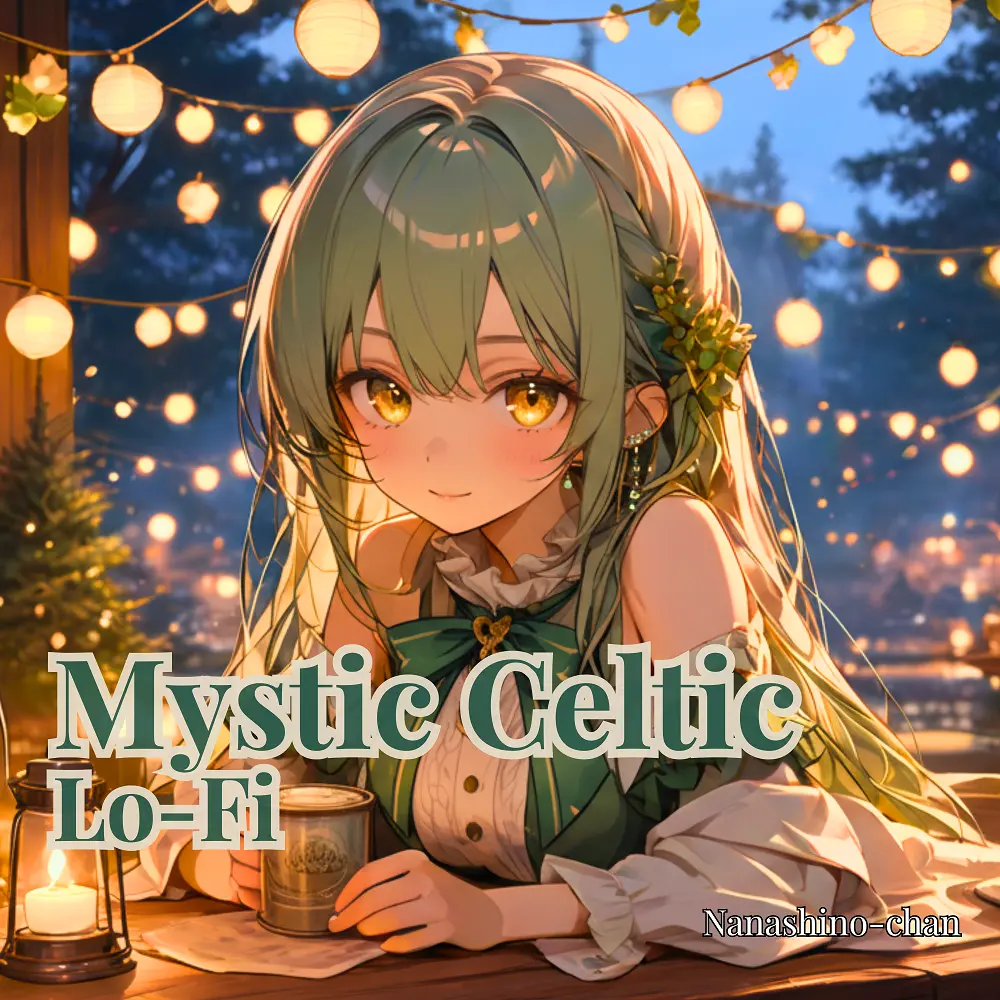

Lo-Fi
Celtic Dreams: Lo-Fi Melodies for Relaxation | St. Patrick’s Day Special
Nanashino-chan
Explore Celtic Dreams: Lo-Fi Melodies for Relaxation | St. Patrick’s Day Special by Nanashino-chan: 19 instrumental tracks spanning Lo-Fi. Start with Whispers of the Highlands / Emerald Winds, preview the collection and find your favorites on streaming services.
2025-02-28 · Released · 19 tracks · Instrumental
Preview the album
The jacket stays here until you choose a track. Playback uses YouTube.
YOUTUBE PREVIEW
Choose a track to listen
The jacket stays here until you choose a track. Playback uses YouTube.
If playback is unavailable, open the album or track on the streaming service.
Find this album on streaming services
Links marked “search” open search results. Select the album or track on the service.
Track list 19
- 01Whispers of the Highlands
- 02Emerald Winds
- 03Serenity in the Glens
- 04Shamrock Serenade
- 05Harp Strings of Eire
- 06Celtic Dawn
- 07Whistle's Lullaby
- 08Echoes of the Cliffs
- 09Misty Isle Melodies
- 10Quiet Shores
- 11Shores of Tranquility
- 12Flow of the River
- 13Twilight Fields
- 14Harp of the Glen
- 15Whistle & Waves
- 16Nightfall in Ireland
- 17Dreaming in Green
- 18Peaceful Horizons
- 19Whistle's Farewell
Find a sound for your next post
Copy “Nanashino-chan + track title” and paste it into your social app’s music search. Availability depends on your region and account. Copying the name does not grant usage rights.